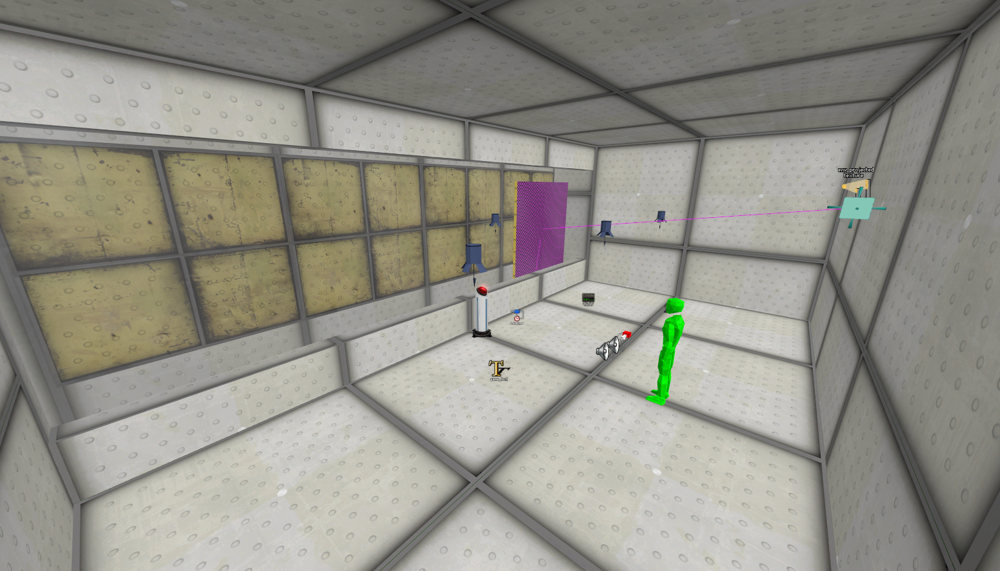
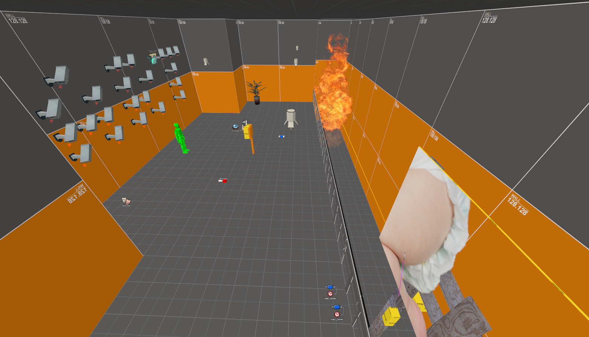

{% comment %} TODO: Finish this page {% endcomment -%}
<div id="wrapper">
    {% include p.liquid n="notices/unfinished.html" i=1 %}
    
    <p>On 2024-10-08 William from the Crows Crows Crows Discord Server randomly released a bunch of beta TSP:HDR content such as screenshots, but more notably a pack full of a bunch of raw development VMFs. These contained many beta versions of current day maps, as well as a lot of other tests and unused areas. The map pack didn't include every known map from development, but it likely contains a large portion of them. It doesn't include any assets however, although William has said he would release the Beta Builds of the game once he looks them over. He has yet to release them to this day, but he confirmed he didn't forget about them on 2024-11-13.</p>
    
    <!-- <div class="tsp-beta-maps-row">
        <div class="tsp-beta-maps-generic-bg"></div>
        <h1 class="title-category">Analysis Flags</h1>
        <ul>
            <li>[#]<ul>
                <li>Every map has at least one screenshot providing a preview of how it looks. If multiple screenshots exist per map, this flag is used to distinguish them from each other. All screenshots have the same name as their relevant map file, but if there are multiple screenshots a "-#" is appended to the end to distinguish them.</li><br>
            </ul></li>
            <li>(C) - "Complete"</li>
                <div class="indent2">Map Has been completely checked over and all important information has been gathered. All maps without this flag are assumed to still need looking over</div><br>
            <li>(M) - "Mostly Complete"</li>
                <div class="indent2">This map has been looked over, but hasn't been so thoroughly checked that it would be considered "complete"</div><br>
            <li>(B) - "Big Beta"</li>
                <div class="indent2">This map has a lot of Beta stuff that needs extra care in looking over</div><br>
            <li>(V) - "Verify"</li>
                <div class="indent2">Verify if the provided information is actually correct / accurate</div><br>
            <li>(E) - "Elaborate"</li>
                <div class="indent2">Needs further elaboration, to be more specific</div><br>
            <li>(D) - "Differences"</li>
                <div class="indent2">Needs to be checked for differences between at least one other map</div><br>
            <li>(!)</li>
                <div class="indent2">Generic "Check back on this later"</div><br>
        </ul>
    </div> -->
    
    <h1 id="babygame" class="title-category">Baby Game</h1><br>
    <div class="tsp-beta-maps-row">
        <div class="tsp-beta-maps-text">
            <h2>(M) babygame_a0.vmf - 00/00/0000</h2>
            <p>
                A very early iteration of the baby room that uses some Portal 2 textures and assets
            </p>
            <h3>Notables:</h3>
            <ul>
                <li>Uses an old texture for the baby: "signage/noff/baby"</li>
                <li>A game_text entity with the text "We then move onto the HL2 map!". This implies that Half Life 2 was still part of the original Playtest Ending before they changed it</li>
            </ul>
        </div>
        <div class="tsp-beta-maps-image-container"></div>
        <div class="tsp-beta-maps-bg"></div>
    </div>
    <div class="tsp-beta-maps-row">
        <div class="tsp-beta-maps-text">
            <h2>(M) babygame.vmf - </h2>
            <p>
                An earlier version of the Baby Game room<br>
                (!) This map appears in one of the trailers
            </p>
            <h3>Notables:</h3>
            <ul>
                <li>A bunch of cameras on the back wall that spell out the word "ART"</li>
                <li>Contains a Water Cooler</li>
                <li>The Baby texture is improperly sized, and the old texture "signage/noff/baby" is still present on the back side</li>
            </ul>
        </div>
        <div class="tsp-beta-maps-image-container"></div>
        <div class="tsp-beta-maps-bg"></div>
    </div>
    <div class="tsp-beta-maps-row">
        <div class="tsp-beta-maps-text"></div>
        <div class="tsp-beta-maps-image-container"></div>
        <div class="tsp-beta-maps-bg"></div>
    </div>
    
    <h1 id="babygame" class="title-category">Category</h1><br>
    <div class="tsp-beta-maps-row">
        <div class="tsp-beta-maps-text"></div>
        <div class="tsp-beta-maps-image-container"></div>
        <div class="tsp-beta-maps-bg"></div>
    </div>
</div>